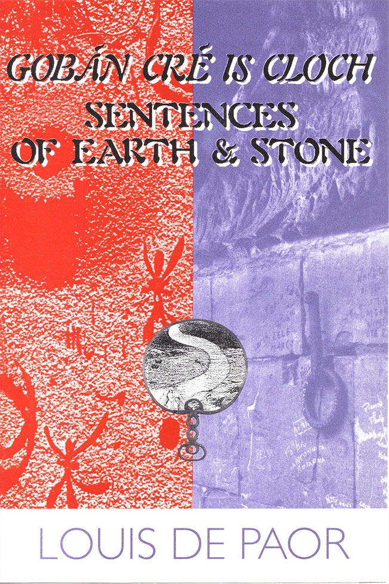

Sentences of Earth & Stone / Gobán Cré is Cloth
Louis de Paor

Description
Gobán Cré is Cloth/Sentences of Earth & Stone is Louis de Paor’s second collection of his Irish poetry accompanied by his English translations. These poems of love, history and memory have been critically acclaimed and are now reprinted for the first time. This collection was nominated for The Irish Times Literary Award in 1997. The terror of distance from family or language invades the everyday. Individual moments are suddenly alert with protest, loss or larger possibility. In our times of the fashionably cool, he writes poems of cruelly informed warmth. Love poems of such a passionate tenderness as to take one's breath away. Tim Thorne His sense of the special in the ordinary... his capacity to tap beneath consciousness, allows an energetic compassion that strikes deeper than sympathy. Lynette Kirby Louis de Paor can make a genuine claim on greatness. Pete Hay
Description
Gobán Cré is Cloth/Sentences of Earth & Stone is Louis de Paor’s second collection of his Irish poetry accompanied by his English translations. These poems of love, history and memory have been critically acclaimed and are now reprinted for the first time. This collection was nominated for The Irish Times Literary Award in 1997. The terror of distance from family or language invades the everyday. Individual moments are suddenly alert with protest, loss or larger possibility. In our times of the fashionably cool, he writes poems of cruelly informed warmth. Love poems of such a passionate tenderness as to take one's breath away. Tim Thorne His sense of the special in the ordinary... his capacity to tap beneath consciousness, allows an energetic compassion that strikes deeper than sympathy. Lynette Kirby Louis de Paor can make a genuine claim on greatness. Pete Hay
{kind=link}
Information
| ISBN | 1876044063 |
| Release | 1996, reprinted 1997 |
| Pages | 91 |
About the Author
Reviews
Robert Verdon, Muse
Books Robert Verdon (author of The Well-Scrubbed Desert ) Muse , February 1997 This is exquisite poetry. When I opened it I was ‘worded out’ from too much reviewing, but (perhaps due to my Celtic soul) it revived me in a flash. Louis de Paor (pronounced more or less ‘de pware’) has a particular talent for striking imagery - ‘a surplice-white light’; ‘useless as a rope on sand / when curiosity slipped its lead’; ‘scoops of wind off the mountain’. His book is bilingual but sadly I’m not, so I’ll stick to the Saxon translations. ‘The Isle of the Dead’, which may refer to Australia, is a strongly anti-imperialist work, yet lacks the awkward self-consciousness or arch didacticism found in the political works of less accomplished poets. The corner of this foreign field is forever England, perhaps, but it is an England of convicts and their military oppressors, an England of master and slave. And though they are dead, this England, a system of dehumanising brutality driven by greed and hypocritical Christianity, lives on: ‘You must remember these were naughty boys who had to be shown the error of their wicked ways’, explained the guide ex-army in polished shoes and priest-clean nails, his sweet talk fouling the air with mouldering lies. Naughty boys, all of them Irish: ‘pointless to pray / for the souls of animals.’ ‘The Corn Field’ had me almost in tears; it looks back at a childhood trauma through a prism sharper than mere nostalgia. With his talent for understatement, de Paor is a master of the elegy, the cold-eyed, warm-hearted poem that catches you up when you least expect it. All these poems arc alive with joy or heartache; the emotions they engender can be scarifying, but all are liberating (and in two languages at that). For once I can truly agree with the blurb on the back: de Paor, as Philip Cleary states, is a ‘rare and radical talent’.
Lyn McCredden, Arena
Gaelic Breath Lyn McCredden (academic and essayist) Arena , April-May 1997 I don’t read Gaelic, though I wish I did, and so am not eminently suitable to review this book. However, reading Louis de Paor’s Sentences of Earth & Stone , his second bilingual English/Irish book of poetry, I am given some chance to enter into the words and scenes and character of another culture, by chance the culture of my ancestors. de Paor is an Irishman from Cork who has lived and written in Australia for the last nine years. He is currently back in Ireland for a year, the recipient of the Seán Ó Ríordáin Prize. In performance, Louis reads his poetry in both English and Irish. For the audience, it is a thrilling and a humbling experience. You are invited to listen to poetry as it makes sense and music in two languages so very different in sound and history. It’s not merely the rich, earthy narratives of these poems, but the musical repertoires of the two languages which give such pleasure. The mono-lingual reader like myself must sit humbly with the presence of poems on facing pages in a language and from a culture so different to the English. The title’s ‘sentences of earth and stone’ suggests contact with a simple, everyday and peasant-based world - ‘the argot of old men / on stone benches ... their gapped mouths / and the sun’ - where ordinary objects and time schemes are invoked. However, the first poem, ‘Fable’/ ‘Fabhalscéal’, elaborates on these old men and their argot: ‘When silence fills their mouths’ with ‘the wooden language of the dead’. It is a metaphysical elaboration in the most palpable of language. The second poem, ‘Isle of the Dead’, is also concerned with death through the things of death: headstones, graven letters, worms and cages of bone. But as in ‘Fable’, it is death as metaphor for living which is a central concern. Death is registered in all its forms: in the land and the weather - ‘the weight of a sky / that drove their easygoing bodies / beyond the unhurried stroke / of their gentle hearts;’ and includes the living bodies which know their destinies: ‘a surplice-white light pouring / from the well of their gapped mouths.’ In ‘Isle of the Dead’ ‘the convicts lie as / they did in life on edge / in cramped beds ... to teach the thing / the body is a jail’. This latter lesson is not de Paor’s directly, but it is one the poet sees inscribed everywhere in human beings’ treatment of each other. Much of the poetic and political energy is found in de Paor’s searching out the possible reasons for such barbarity. In rough, blunt, short lines the poetry spits out its accusations against those who continue to perpetuate the lies of colonisation and human cruelty: You must remember these were naughty boys who had to be shown the error of their wicked ways,’ explained the guide, ex-army in polished shoes and priest-clean nails, his sweet talk fouling the air with mouldering lies. ‘The Isle of the Dead’ It won’t be the words and actions of the army or the religious who can honour such dead, but the poet’s, as his poetry momentarily resurrects the forgotten, in a rollcall of the long dead: ‘Thomas Kelly, / carpenter, Edwin Pinder, / miner, John Bowden, barber... a rollcall unopened... without stain that bows / my head and inflexible / knee in supplication / to the earth’. The rough dignity given to such victims of a past regime finds its power from the poet’s words, and their anger at the brutality which was their lives and deaths. The religious and political forces which would leave such a rollcall ‘unopened’ are repudiated, as the poet forges an angry ‘supplication’ in his art. But there’s also lightness of touch, and humour, in de Paor’s poetry. Shoes and objects of the household are given life as they sense the onset of summer, that ‘hooligan / hooning around corners / joyriding with the sun’: At the back of the wardrobe behind the broken clock my grandmother’s shoes can feel forbidden music touch her dead feet, click of fingers clack of heels smack of lips on powered cheeks ‘Visitors’ Here the dance between death and life takes a joyous turn, and the structure of the lines expresses the verve, part nostalgia, part humour. Generalisations such as ‘the Irish are musical and nostalgic’ are pretty vapid, so I’ll just say that here’s an Irish poet who creates through both registers, but who also has a keen sense of the present. The everyday - of children and parents, of sexual bodies, of things - is created through music and a contemporary sense of living, upon which the past impinges endlessly. de Paor likes to tell stories, and many of his longer poems are historically placed narratives of childhood, of loss, of longing. What is most interesting for me is the plangent sense of struggle in many of the poems between life and death, the past and the present, the traditional and the individual. The acknowledgements thank, amongst others, those close to the poet who ‘set me back on course whenever I strayed onto the straight and narrow’. The nice irony of this phrase is augmented by the tensions, inscribed in many poems, between old religious beliefs and practices and more earthy, earthly realities. For instance, in the long narrative poem in five parts. ‘The Cornfield,’ the brutal death of a small child - ‘...her huddled body / small as a wren nesting in a bed’ - is remembered: As we said the rosary that night the cold floor hurt our knees, we made a quilt from patches of old prayers to cover her perished soul and lit a candle at the Virgin’s feet to keep out the night for a while, we drugged the bulk of heavy blankets on stone cold bones that would never again be warm. ‘The Cornfield, Part 4’ de Paor often writes like this, abutting religious and bodily needs agains each other, in a climate (Irish? Melburnian?) which doubts the efficacy of prayer, but grimly confirms the need of it also. Sentences of earth and stone are mortal ones in this volume, but the music of de Paor’s ‘everyday wordbrawl’ continues to exhilarate.
Metre Review
A t the Margins’ Margins Gobán Cré Is Cloch/Sentences of Earth & Stone Simon Caterson Metre (Ireland) 2001 The reason why people abroad tend to think there are more Australians than there are is because so many of them are at any given time out of the country. It is therefore refreshing to find a poet of Louis de Paor’s calibre travelling in the opposite direction. If not geographically then linguistically Louis de Paor is as isolated an exile as perhaps a poet can be nowadays. de Paor refuses to allow the English translations of his work, or ‘forgeries’ as he prefers to call them, anywhere near Ireland. Like his previous bilingual collection, the new poems, at least in the English, celebrate the newfound landscape and in particular its big weather, but de Paor also begins to explore an Irish childhood. His thoughts, it seems, heliotrope towards home, though he also has some powerful things to say about indigenous Australians, with whom he as an indigenous Irishman feels an affinity. It is here that a rich seam is waiting to be worked.
Tirra Lirra Review
A Terrible Beauty Is Born Poetry and Community in the work of W.B. Yeats, Seamus Heaney, Vincent Buckley and others John McLaren Tirra Lirra , Vol. 9, No. 4, Winter 1999 Appropriately, an Irish-born and Gaelic-speaking poet, Louis de Paor, has been able to suggest the link between the oppression of the Irish, the convict system in Australia, and the dispossession of the Aborigines. His long poem on Port Arthur, ‘The Isle of the Dead’, describes first the graves of the English, their headstones facing home to England as the tourist guide justifies their deeds with ‘mouldering eyes’. The poet then describes the graves of the Irish where they Lie as they did in life on edge in cramped beds that hurled them against walls or knocked them to the floor if they moved in their sleep, a devout technology to teach the thing the body is a jail to be rent asunder releasing God’s image imprisoned within, The spare lines allow no sentimentality as they move from the physical details of incarceration by way of the explicatory and condemnatory phrase, ‘devout technology’, summing up the twinned aspiration and process of imperialism, to the ironic message. The gaol that holds the image of God also denies it, but by confining the prisoners together creates for them a community that survives in the chronicle of names on headstones with which the poem concludes. Even those whose names are not recorded constitute a ‘rollcall unopened’, to be known only in the future, but with the power in the present to bow the poet’s head and inflexible knee in supplication to the earth. This rollcall of the unknown refers not only to the convicts, but to all the anonymous labourers whose work has built the settler society. In the following poem, ‘Didjeridu’, the poet turns to the song of the dispossessed, which, rather than setting rebel hearts to dance, calls up the sounds of the land and its creatures, and Ancient tribes of the air Speaking a language vour wild Colonial heart cannot comprehend. For those able to listen ‘for a minute or two/ hundred years’ these songs ‘bleed from punctured lung’, while our gentle ancestors can only ‘beat the skin of the earth’, feeling nothing. In this admission of an inability penetrate to the meaning of the song, while still being prepared to listen to it, and to the voices of the convicts, lies the possibility of community that, by acknowledging responsibility for its past, will learn to be at home with the land. Louis de Paor, speaking as a latecomer this land, as well as a speaker of the language of the oppressed of the old world, is able express a community that will transcend both the suffering and oppression of the past and the divisions they breed even as we try redress them.
Quadrant Review
The Necessity of True Speaking Alison Croggon Quadrant November 1997 Only truthful hands can write true poetry, said Paul Celan. Celan, the exiled German Jew who perhaps more than any other twentieth-century poet attempted to make of the quicksand of language a place where truth could exist, stands as a beacon of rigour. His standards are harsh, exacting, extreme. He is a wound in the side of poetry, an admonition, an exhortation to attention, a conscience. With Osip Mandelstam, another child of political and social extremity, he has been called a martyr and a saint. But it would be more respectful and more accurate to say of them both, as Rene Char said of Rimbaud, that they were poets, and that is enough. Such voices are discomforting. They do not protect themselves, they do not apologise, and despite their disconcerting humility they will not budge from an insistence that the heart must be ‘a place made fast’, that poetry is ‘a unique instance of language’ that matters uniquely. They write from the far reaches of existence, uncertain whether their poems will ever wash up ‘on the shoreline of a heart’. And yet they speak, across the vastness of their silences, in the face of everything that demonstrates such speaking is impossible, that such speaking has no value. That’s the high standard. No historical age has been hospitable to poets. Poetry is always, as Celan and Mandelstam both said, ‘against the grain’ of an epoch. It often appears that, given this general caveat, we have entered a time when poetry is less possible. The Italian Nobel laureate Eugenio Montale claimed that we were entering a new ‘dark age’ driven by the materialist ideologies of technology, in which the processes of the spiritual organism that are tracked in the poet will increasingly retreat from the Zeitgeist of the age. Poetry, that mode of speech which penetrates the legislative armour of language to remind us of a possible wholeness of being, a possible freedom, a possible truth, is now almost wholly ‘against the grain’. But the urge towards the poetic is a primitive and stubborn expression of humanity that will never vanish entirely. Poetry is not, and never has been, merely a business of words. Craft, as Celan said, is of minimal interest: one expects craft as one expects hygiene. Living speech escapes classifications, proceeding by a process of constant improvisation, and literature, its cousin, is without exception connected to the act of human breathing, the rhythm of a body, and consequently will always present the disruptions of complexity. The true life of poems.does not exist in their craft, however formally attentive the language, but in another activity the craft makes possible: what one might call the living organism of the poem, a kind of magnetic field around the words that is at once immediately perceptible and impossible to describe. The six books under review started me thinking again of the question of the poetic… Of all these writers, de Paor is the closest to an intuition of human truth, the least afraid of the deep vein of poetic resistance. Sentences of Earth and Stone is an extremely readable book, a virtue of the stubborn clarity of de Paor’s language. The poems are given en face in English and the original Gaelic. I can’t really speak about the Gaelic, but the English poems are compromised by a refusal of craft that may be, in part, a political refusal of the heritage of English poetry. de Paor’s aim is to give speech to the unvoiced, the dead and the anonymous living, and he gives weight in the world of his poems to a tangible domestic world and the clear but incomplete perceptions of childhood, written with a simplicity that at its best recalls the unadorned voice of Patrick Kavanagh. ‘Scribbling’, the last poem in the book, finishes: I can just make out, A trick of the light Maybe, a smeared claw Tagged with the ring of words, A prop against the Jamb of nothing, A breath of air on The hinge of everything. This sense of the contingency of language runs through the book, an intuition of immanence within the everyday that notes ‘this never / ending moment already gone / in the whoosh of an angel’s wing’. But de Paor eschews a tight lyric control that might push his metaphors further than one step into meaning. I can’t help thinking of the grace and intensity that inhabit the poetry of the Estonian poet Jaan Kaplinksi, whose stringent and pained insistence on the present, human moment opens into a Buddhist contemplation of the eternal: de Paor’s poetic impulse is in similar territory, but his lack of discipline often slackens the line and leaves the impulse floundering. His simple language can drop to the simply prosaic, relying for its emotive weight on unquestioning political or emotional sympathy. This is clear, for instance, in the sequence on Port Arthur, ‘The Isle of the Dead’, which assumes a status of wronged victimhood for the convicts and generates its energy not from its language but from its charged subject matter. The truth of the Port Arthur penal colony is more complex and brutal than de Paor’s lament for murdered innocence suggests, and apotheosis for its uneasy shades calls for a harsher resolution of paradox than de Paor offers in his rollcall of Irish names, ‘a shower of rain / without stain that bows / my head.’
Australian Book Review Review
Beguiling Irish Lynette Kirby Australian Book Review , No. 183, August 1996 Louis de Paor has been involved with the renaissance in Irish language poetry since 1980 and this is his second bilingual collection (the first was Aimsir Bhreicneach / Freckled Weather ). I was fortunate to hear him reading his poems in both languages last June on Radio National’s Books and Writing and was transfixed by the music and movement of the Irish Gaelic - mellifluous, vital, achingly melancholic. Sentences of Earth & Stone comprises only twenty-eight poems and the poems in English translation hold the same qualities. The words flow and loop, curl and twist, resound, and beguile. Sometimes a last line dumps us with the insistence and authority of a wave dumping its debris. The imagery is so strong as to bring alive ‘chipped crockery’ and a dripping tap (‘The Creator’) with the imperfection, the coarseness and vitality of a Van Gogh. There are poems of dislocation, exile and desecration, both historical and contemporary - in particular see the long second poem in the volume, ‘The Isle of the Dead’, ‘Didjeridu’ and ‘Assimilation’, a short poem which quietly and simply sums up the trauma of the event in the last line, ‘Still he doesn’t believe.’ There are love poems of different kinds, some of which hold the minutiae rather than embrace the grand scale, showing small precious moments that are often not consciously realised, both intimacy and separateness implicit. ‘The Lucky Caul’ is a fine example: Catwoman purrs beside me, lascivious thoughts slinking through her stretching limbs until her toes touch the hollow behind my knees soft as a kitten’s tongue lapping milk... ...and still I wouldn’t go choosing instead this never ending moment already gone in the whoosh of an angel’s wing. The moment looms large in de Paor’s poetry - a glimpse, a quickening, a discovery, a recognition, a swift act of violence, a twist of fate. In ‘Heart Beat’ a sleeping woman’s ‘indrawn breath / stops’ momentarily, poised in nothingness, before the flood of life to come, providing a shocking realisation of mortality. ‘Treasure’ suggests the human condition reflected in what is heard in the moment of putting an ear to a shell. ‘Sliabh Luachra,’ a short, spare, potent poem, elucidates ‘a foothold on the edge / of nothing,’ which is where de Paor takes us frequently, pushing the limits within the commonplace to show all manner of possibilities. His sense of the special in the ordinary, his obvious contempt for pretension and hypocrisy, his capacity to tap beneath consciousness, allows an energetic compassion that strikes deeper than sympathy. Of earth and stone this book certainly is: rooted in the ground, the cornfields, hawthorn bushes, fruit, bonfires and chestnuts - and as buoyant as ‘scoops of wind off the mountain’ (‘Spectacles’); encompassed by the Irish tavern ‘fug;’ permeated by the sea, which parallels in human terms cruelty, treachery, unpredictability, death and a wild beauty; and relishing the simple but necessary way we shape our world first thing in the morning when the day is still innocent (see ‘The Creator’). There is huge joy in the love of a young daughter (‘Daughter’); and luscious love in ‘Apples and Pears’ which by turn is heavy, thick and sweet, light, languorous and delicate. There is a hint of the mystical, or at least the unknown felt, a shift to the beyond and its peculiar power. Throughout the book Louis de Paor works with sunlight, day and night, the sun and moon, providing a shifting pattern of light and dark that is as visual as it is metaphorical. It’s bewitching poetry and its kernel is quintessentially Irish.
The Mercury Review
Irish poet brings an Australian flavour to his work Tim Thorne The Mercury , 22 June 1996 Louis de Paor is one of the best contemporary poets from a land that has traditionally produced great masters of the art. Unlike those of his compatriots who are better known to the English speaking world, such as W.H. Yeats and Seamus Heaney, he writes primarily in the Irish language, then translates his work into English. de Paor has twice won the Seán Ó Ríordáin Prize, the premier award for poetry in his native tongue, and for nearly 10 years has been living and writing in one of the great cultural centres of the Irish diaspora, Melbourne. Hear Tasmanians have been fortunate enough to have had opportunities to hear him read on a number of occasions over the past couple of years, but the appearance of this book is timely, as he has recently returned to his native city of Cork and it may be some considerable time before we hear his mellifluous bilingual performances again. This selection contains a number of poems with Australian settings, including the long poem, ‘The Isle of the Dead’ / ‘Oileán Na Marbh’, set in Port Arthur, which is a powerful evocation of the brutality and shame of that accursed place. Other poems, such as ‘Assimilation’ / ‘An Dubh Ina Gheal’ and ‘Didjeridu’ (which, unsurprisingly, has the same title in Irish), deal with Aboriginal themes, and it is interesting to read the responses to such subjects from a writer whose background is a similarly colonised culture, especially alongside those which are set in Ireland. Love The book also contains a handful of love poems of such a passionate tenderness as to take one’s breath away, poems full of delicate observation, earthy sensuality and whimsical humour which add a dimension to his poetry which was not evident from his earlier published work in English. Louis de Paor already has a firmly established reputation as an Irish poet. This collection should help him achieve his due recognition as a major contributor to multicultural Australian literature as well.
Peter Hay Review
de Paor, Beach: Poets, Humans Extraordinaire Peter Hay, Famous Reporter , No. 13, June 1996 Louis de Paor lives in Brunswick, Melbourne, and is devoted to the preservation and propagation of the Irish language. A very large ask for someone who is a resident of Brunswick, Melbourne. Too large an ask - and Louis de Paor is about to leave us, going home. He may, perhaps, come back - but if not, and for the nonce, we are much the poorer. Louis de Paor is both a great Irishman and more; he is, too, a great observer of the human condition. Thus he also knows Australia and its peoples; its foibles and rhythms; its lights and darks; its plagues and its promise - and particularly does he know his adopted Melbourne, from its great folk expression, Australian football, that vast all-gathering passion that he shares, to the political phenomenon that is his friend Phil Cleary, whose last quixotic political stand attracted to its defiant banner the wisest Melburnians, and the best. Louis’ parting gift is Gobán Cré Is Cloch , the second of two bilingual poetry collections to have been published in Australia. The first of these, Freckled Weather , was warmly received - perhaps especially so here in Tasmania, where Louis has been a regular visitor, has read to considerable acclaim, and where he has made many friends. To my mind Gobán Cré Is Cloch actually surpasses Freckled Weather in power and imaginative reach. Though the themes in Gobán Cré Is Cloch represent a continuity rather than a sea change - finely observed memories of childhood, the liberatory struggle against stultifying moral and cultural closure, the small and profound comforts of loving family relationships - this fine poet here rides new, vibrant currents of language; strikes beyond conventional boundaries of metaphor. I most enjoy de Paor when he depicts the profound heart within moments apparently small and commonplace. There are many such poems in this book - a young novice goes into a pub to see her mother (‘The Novice in the Tavern’); as the poet lies sleepless in bed his partner, for a split second, stops breathing (‘Heart Beat’); the same poet, in the same bed, reflects contentedly on his lot in the instant before sleep (‘The Lucky Caul’): I’m so lighthearted and airy a wren’s fart would blow me clean into the next world and still I wouldn’t go choosing instead this never ending moment already gone... In this mode is ‘The Creator’, a poem that I think an absolute standout, one upon which Louis de Paor can make a genuine claim on greatness. A woman (the poet’s mother?) goes about her early morning chores whilst her dozing husband gently, perhaps a little reluctantly, struggles into wakefulness. This is a beautiful poem; it conveys a small, affectionately observed world of corn flakes crisp as frosted grass, handsome eggs with moles on their cheeks and steaming tea so strong underfoot a mouse might trot along on legs of faith without drowning. Louis de Paor remains a poet of Irish preoccupations, with an Irish cast of phrase even in the English (vis the marvellous ‘this bockety house’), and with the eye and the spirit of an earlier Ireland struggling through today’s drear blanket of orthodoxy. This flows inconspicuously through much of the volume, and in ‘Believing’ it is made explicit, as an old woman reverts to pagan superstition in the time of her dying. The surfacing of such tensions provides some of the most memorable of images, some of these comforting: the fianna came back to a hollow in the middle of the ploughed field, their laughter smelled of fermented apples as bonfires blazed on their flushed cheeks... some not: ...when the relentless pull of the music leaves the body sense less and all the souls of the dead hurl a demented yell from the mouths of the living... A poet of Ireland first and foremost then - but Louis de Paor also brings his unique eye and sensibility to Australia - as many of his countryfolk have done before him. I have already said that I think ‘The Creator’ a poem of greatness - but two other poems, I think, warrant similar assessment, and these are both overtly Australian poems. One of these is a brilliant and complex linking of the didjeridu with biophysical and spiritual essences of a landscape old beyond telling (‘Didjeridu’). The other is a slashing, angry, entirely contemporary tribute to the unmarked convict dead of Port Arthur’s Dead Island (‘The Isle of the Dead’). I have heard Louis de Paor read this poem (at Port Arthur!). Hear it once, it’s never forgotten. The poem has two distinct segments - in the second de Paor struggles to find a respectful visitor’s appropriate demeanour in the presence of the island’s dead: ‘You should go down on your knees on this sacred ground and pray,’ my pagan companion counseled but I will not bend my heart or my knee. Better to wear a cowl to hide the shame of man made nothing, to cover your face lest the remnant of light reflected in your eye absolve the irredeemable dark. Towards the end of this long poem de Paor does an apparently unpoetic thing. He lists - merely lists - the names and occupations of some of the Irishmen anonymously buried in the mass graves. But it is not in the least prosaic - it is, rather, a moment of sustained emotional power. And then, as the poem ends, de Paor reconsiders, despite himself, his earlier position: a rollcall unopened, a snail’s trail across eternity, a shower of rain without stain that bows my head and inflexible knee in supplication to the earth. Recent happenings [the mass shooting at the former penal settlement] at Port Arthur have so overwhelmed the Tasmanian community that, in the understandable desire to ensure a respectful remembrance for the dead of 1996, there is a very real possibility that the time and place of the earlier dead, the dead who came here to create Port Arthur, will be obliterated. Louis de Paor’s masterful poem stands as a warding against that danger. It will, I hope, become a familiar, much read cornerstone of Tasmanian literature - as Gobán Cré Is Cloch will become, I hope, a classic of a robust literature of the Irish language. …Not even [Eric] Beach [author of Weeping for Lost Babylon ] surpasses de Paor in performance. To listen to de Paor is to listen to the cadences of deep, rolling ages, and the moment when the elemental music of the Irish language flows as water into the translation is a rare point of poetic experience. And de Paor, too, is a person of noble, undeflectable passion - for him, too, his life is where his poetry is. This Irishman, this New Zealander [Eric Beach], dwelling here on our thus privileged shores, are truly poets and humans extraordinaire.